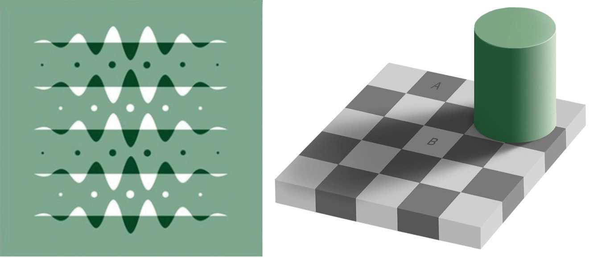
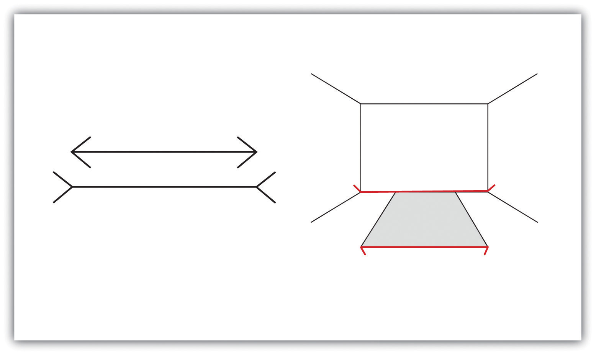
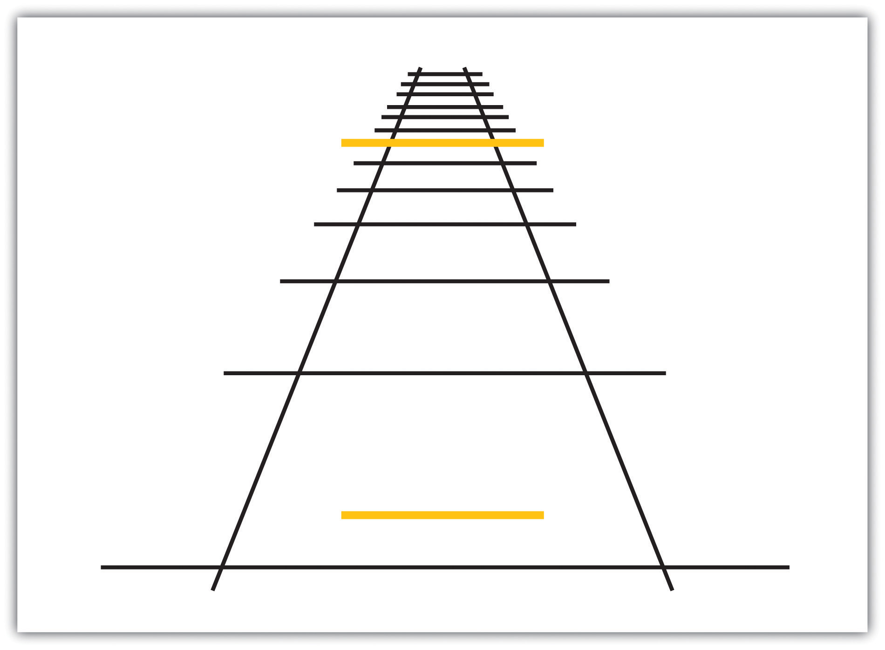
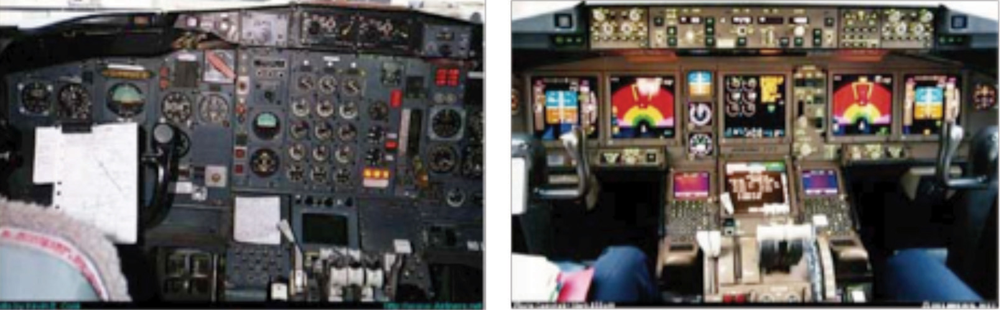

The eyes, ears, nose, tongue, and skin sense the world around us, and in some cases perform preliminary information processing on the incoming data. But by and large, we do not experience sensation—we experience the outcome of perception—the total package that the brain puts together from the pieces it receives through our senses and that the brain creates for us to experience. When we look out the window at a view of the countryside, or when we look at the face of a good friend, we don’t just see a jumble of colors and shapes—we see, instead, an image of a countryside or an image of a friend (Goodale & Milner, 2006).Goodale, M., & Milner, D. (2006). One brain—Two visual systems. Psychologist, 19(11), 660–663.
This meaning-making involves the automatic operation of a variety of essential perceptual processes. One of these is sensory interactionThe working together of different senses to create experience.—the working together of different senses to create experience. Sensory interaction is involved when taste, smell, and texture combine to create the flavor we experience in food. It is also involved when we enjoy a movie because of the way the images and the music work together.
Although you might think that we understand speech only through our sense of hearing, it turns out that the visual aspect of speech is also important. One example of sensory interaction is shown in the McGurk effect—an error in perception that occurs when we misperceive sounds because the audio and visual parts of the speech are mismatched. You can witness the effect yourself by viewing Note 4.69 "Video Clip: The McGurk Effect".
The McGurk effect is an error in sound perception that occurs when there is a mismatch between the senses of hearing and seeing. You can experience it here.
Other examples of sensory interaction include the experience of nausea that can occur when the sensory information being received from the eyes and the body does not match information from the vestibular system (Flanagan, May, & Dobie, 2004)Flanagan, M. B., May, J. G., & Dobie, T. G. (2004). The role of vection, eye movements, and postural instability in the etiology of motion sickness. Journal of Vestibular Research: Equilibrium and Orientation, 14(4), 335–346. and synesthesia—an experience in which one sensation (e.g., hearing a sound) creates experiences in another (e.g., vision). Most people do not experience synesthesia, but those who do link their perceptions in unusual ways, for instance, by experiencing color when they taste a particular food or by hearing sounds when they see certain objects (Ramachandran, Hubbard, Robertson, & Sagiv, 2005).Ramachandran, V. S., Hubbard, E. M., Robertson, L. C., & Sagiv, N. (2005). The emergence of the human mind: Some clues from synesthesia. In Synesthesia: Perspectives From Cognitive Neuroscience (pp. 147–190). New York, NY: Oxford University Press.
Another important perceptual process is selective attentionThe ability to focus on some sensory inputs while tuning out others.—the ability to focus on some sensory inputs while tuning out others. View Note 4.71 "Video Clip: Selective Attention" and count the number of times the people playing with the ball pass it to each other. You may find that, like many other people who view it for the first time, you miss something important because you selectively attend to only one aspect of the video (Simons & Chabris, 1999).Simons, D. J., & Chabris, C. F. (1999). Gorillas in our midst: Sustained inattentional blindness for dynamic events. Perception, 28(9), 1059–1074. Perhaps the process of selective attention can help you see why the security guards completely missed the fact that the Chaser group’s motorcade was a fake—they focused on some aspects of the situation, such as the color of the cars and the fact that they were there at all, and completely ignored others (the details of the security information).
Watch this video and carefully count how many times the people pass the ball to each other.
Selective attention also allows us to focus on a single talker at a party while ignoring other conversations that are occurring around us (Broadbent, 1958; Cherry, 1953).Broadbent, D. E. (1958). Perception and communication. New York, NY: Pergamon; Cherry, E. C. (1953). Some experiments on the recognition of speech, with one and with two ears. Journal of the Acoustical Society of America, 25, 975–979. Without this automatic selective attention, we’d be unable to focus on the single conversation we want to hear. But selective attention is not complete; we also at the same time monitor what’s happening in the channels we are not focusing on. Perhaps you have had the experience of being at a party and talking to someone in one part of the room, when suddenly you hear your name being mentioned by someone in another part of the room. This cocktail party phenomenon shows us that although selective attention is limiting what we processes, we are nevertheless at the same time doing a lot of unconscious monitoring of the world around us—you didn’t know you were attending to the background sounds of the party, but evidently you were.
A second fundamental process of perception is sensory adaptationA decreased sensitivity to a stimulus after prolonged and constant exposure.—a decreased sensitivity to a stimulus after prolonged and constant exposure. When you step into a swimming pool, the water initially feels cold, but after a while you stop noticing it. After prolonged exposure to the same stimulus, our sensitivity toward it diminishes and we no longer perceive it. The ability to adapt to the things that don’t change around us is essential to our survival, as it leaves our sensory receptors free to detect the important and informative changes in our environment and to respond accordingly. We ignore the sounds that our car makes every day, which leaves us free to pay attention to the sounds that are different from normal, and thus likely to need our attention. Our sensory receptors are alert to novelty and are fatigued after constant exposure to the same stimulus.
If sensory adaptation occurs with all senses, why doesn’t an image fade away after we stare at it for a period of time? The answer is that, although we are not aware of it, our eyes are constantly flitting from one angle to the next, making thousands of tiny movements (called saccades) every minute. This constant eye movement guarantees that the image we are viewing always falls on fresh receptor cells. What would happen if we could stop the movement of our eyes? Psychologists have devised a way of testing the sensory adaptation of the eye by attaching an instrument that ensures a constant image is maintained on the eye’s inner surface. Participants are fitted with a contact lens that has miniature slide projector attached to it. Because the projector follows the exact movements of the eye, the same image is always projected, stimulating the same spot, on the retina. Within a few seconds, interesting things begin to happen. The image will begin to vanish, then reappear, only to disappear again, either in pieces or as a whole. Even the eye experiences sensory adaptation (Yarbus, 1967).Yarbus, A. L. (1967). Eye movements and vision. New York, NY: Plenum Press.
One of the major problems in perception is to ensure that we always perceive the same object in the same way, despite the fact that the sensations that it creates on our receptors changes dramatically. The ability to perceive a stimulus as constant despite changes in sensation is known as perceptual constancyThe ability to perceive a stimulus as constant despite changes in sensation.. Consider our image of a door as it swings. When it is closed, we see it as rectangular, but when it is open, we see only its edge and it appears as a line. But we never perceive the door as changing shape as it swings—perceptual mechanisms take care of the problem for us by allowing us to see a constant shape.
The visual system also corrects for color constancy. Imagine that you are wearing blue jeans and a bright white t-shirt. When you are outdoors, both colors will be at their brightest, but you will still perceive the white t-shirt as bright and the blue jeans as darker. When you go indoors, the light shining on the clothes will be significantly dimmer, but you will still perceive the t-shirt as bright. This is because we put colors in context and see that, compared to its surroundings, the white t-shirt reflects the most light (McCann, 1992).McCann, J. J. (1992). Rules for color constancy. Ophthalmic and Physiologic Optics, 12(2), 175–177. In the same way, a green leaf on a cloudy day may reflect the same wavelength of light as a brown tree branch does on a sunny day. Nevertheless, we still perceive the leaf as green and the branch as brown.
Although our perception is very accurate, it is not perfect. IllusionsWhen the perceptual processes that normally help us correctly perceive the world around us are fooled by a particular situation so that we see something that does not exist or that is incorrect. occur when the perceptual processes that normally help us correctly perceive the world around us are fooled by a particular situation so that we see something that does not exist or that is incorrect. Figure 4.34 "Optical Illusions as a Result of Brightness Constancy (Left) and Color Constancy (Right)" presents two situations in which our normally accurate perceptions of visual constancy have been fooled.
Figure 4.34 Optical Illusions as a Result of Brightness Constancy (Left) and Color Constancy (Right)
Look carefully at the snakelike pattern on the left. Are the green strips really brighter than the background? Cover the white curves and you’ll see they are not. Square A in the right-hand image looks very different from square B, even though they are exactly the same.
Source: Right image courtesy of Edward H. Adelson, http://commons.wikimedia.org/wiki/File:Grey_square_optical_illusion.PNG.
Another well-known illusion is the Mueller-Lyer illusion (see Figure 4.35 "The Mueller-Lyre Illusion"). The line segment in the bottom arrow looks longer to us than the one on the top, even though they are both actually the same length. It is likely that the illusion is, in part, the result of the failure of monocular depth cues—the bottom line looks like an edge that is normally farther away from us, whereas the top one looks like an edge that is normally closer.
Figure 4.35 The Mueller-Lyre Illusion
The Mueller-Lyre illusion makes the line segment at the top of the left picture appear shorter than the one at the bottom. The illusion is caused, in part, by the monocular distance cue of depth—the bottom line looks like an edge that is normally farther away from us, whereas the top one looks like an edge that is normally closer.
The moon illusion refers to the fact that the moon is perceived to be about 50% larger when it is near the horizon than when it is seen overhead, despite the fact that both moons are the same size and cast the same size retinal image. The monocular depth cues of position and aerial perspective (see Figure 4.36 "The Moon Illusion") create the illusion that things that are lower and more hazy are farther away. The skyline of the horizon (trees, clouds, outlines of buildings) also gives a cue that the moon is far away, compared to a moon at its zenith. If we look at a horizon moon through a tube of rolled up paper, taking away the surrounding horizon cues, the moon will immediately appear smaller.
The Ponzo illusion operates on the same principle. As you can see in Figure 4.37 "The Ponzo Illusion", the top yellow bar seems longer than the bottom one, but if you measure them you’ll see that they are exactly the same length. The monocular depth cue of linear perspective leads us to believe that, given two similar objects, the distant one can only cast the same size retinal image as the closer object if it is larger. The topmost bar therefore appears longer.
Figure 4.37 The Ponzo Illusion
The Ponzo illusion is caused by a failure of the monocular depth cue of linear perspective: Both bars are the same size even though the top one looks larger.
Illusions demonstrate that our perception of the world around us may be influenced by our prior knowledge. But the fact that some illusions exist in some cases does not mean that the perceptual system is generally inaccurate—in fact, humans normally become so closely in touch with their environment that that the physical body and the particular environment that we sense and perceive becomes embodied—that is, built into and linked with—our cognition, such that the worlds around us become part of our brain (Calvo & Gamila, 2008).Calvo, P., & Gomila, T. (Eds.). (2008). Handbook of cognitive science: An embodied approach. San Diego, CA: Elsevier. The close relationship between people and their environments means that, although illusions can be created in the lab and under some unique situations, they may be less common with active observers in the real world (Runeson, 1988).Runeson, S. (1988). The distorted room illusion, equivalent configurations, and the specificity of static optic arrays. Journal of Experimental Psychology: Human Perception and Performance, 14(2), 295–304.
Our emotions, mind-set, expectations, and the contexts in which our sensations occur all have a profound influence on perception. People who are warned that they are about to taste something bad rate what they do taste more negatively than people who are told that the taste won’t be so bad (Nitschke et al., 2006),Nitschke, J. B., Dixon, G. E., Sarinopoulos, I., Short, S. J., Cohen, J. D., Smith, E. E.,…Davidson, R. J. (2006). Altering expectancy dampens neural response to aversive taste in primary taste cortex. Nature Neuroscience 9, 435–442. and people perceive a child and adult pair as looking more alike when they are told that they are parent and child (Bressan & Dal Martello, 2002).Bressan, P., & Dal Martello, M. F. (2002). Talis pater, talis filius: Perceived resemblance and the belief in genetic relatedness. Psychological Science, 13, 213–218. Similarly, participants who see images of the same baby rate it as stronger and bigger when they are told it is a boy as opposed to when they are told it is a girl (Stern & Karraker, 1989),Stern, M., & Karraker, K. H. (1989). Sex stereotyping of infants: A review of gender labeling studies. Sex Roles, 20(9–10), 501–522. and research participants who learn that a child is from a lower-class background perceive the child’s scores on an intelligence test as lower than people who see the same test taken by a child they are told is from an upper-class background (Darley & Gross, 1983).Darley, J. M., & Gross, P. H. (1983). A hypothesis-confirming bias in labeling effects. Journal of Personality and Social Psychology, 44, 20–33. Plassmann, O’Doherty, Shiv, and Rangel (2008)Plassmann, H., O’Doherty, J., Shiv, B., & Rangel, A. (2008). Marketing actions can moderate neural representations of experienced pleasantness. Proceedings of the National Academy of Sciences, 105(3), 1050–1054. found that wines were rated more positively and caused greater brain activity in brain areas associated with pleasure when they were said to cost more than when they were said to cost less. And even experts can be fooled: Professional referees tended to assign more penalty cards to soccer teams for videotaped fouls when they were told that the team had a history of aggressive behavior than when they had no such expectation (Jones, Paull, & Erskine, 2002).Jones, M. V., Paull, G. C., & Erskine, J. (2002). The impact of a team’s aggressive reputation on the decisions of association football referees. Journal of Sports Sciences, 20, 991–1000.
Our perceptions are also influenced by our desires and motivations. When we are hungry, food-related words tend to grab our attention more than non-food-related words (Mogg, Bradley, Hyare, & Lee, 1998),Mogg, K., Bradley, B. P., Hyare, H., & Lee, S. (1998). Selective attention to food related stimuli in hunger. Behavior Research & Therapy, 36(2), 227–237. we perceive objects that we can reach as bigger than those that we cannot reach (Witt & Proffitt, 2005),Witt, J. K., & Proffitt, D. R. (2005). See the ball, hit the ball: Apparent ball size is correlated with batting average. Psychological Science, 16(12), 937–938. and people who favor a political candidate’s policies view the candidate’s skin color more positively than do those who oppose the candidate’s policies (Caruso, Mead, & Balcetis, 2009).Caruso, E. M., Mead, N. L., & Balcetis, E. (2009). Political partisanship influences perception of biracial candidates’ skin tone. PNAS Proceedings of the National Academy of Sciences of the United States of America, 106(48), 20168–20173. Even our culture influences perception. Chua, Boland, and Nisbett (2005)Chua, H. F., Boland, J. E., & Nisbett, R. E. (2005). Cultural variation in eye movements during scene perception. Proceedings of the National Academy of Sciences, 102, 12629–12633. showed American and Asian graduate students different images, such as an airplane, an animal, or a train, against complex backgrounds. They found that (consistent with their overall individualistic orientation) the American students tended to focus more on the foreground image, while Asian students (consistent with their interdependent orientation) paid more attention to the image’s context. Furthermore, Asian-American students focused more or less on the context depending on whether their Asian or their American identity had been activated.
Human factors is the field of psychology that uses psychological knowledge, including the principles of sensation and perception, to improve the development of technology. Human factors has worked on a variety of projects, ranging from nuclear reactor control centers and airplane cockpits to cell phones and websites (Proctor & Van Zandt, 2008).Proctor, R. W., & Van Zandt, T. (2008). Human factors in simple and complex systems (2nd ed.). Boca Raton, FL: CRC Press. For instance, modern televisions and computer monitors were developed on the basis of the trichromatic color theory, using three color elements placed close enough together so that the colors are blended by the eye. Knowledge of the visual system also helped engineers create new kinds of displays, such as those used on notebook computers and music players, and better understand how using cell phones while driving may contribute to automobile accidents (Lee & Strayer, 2004).Lee, J., & Strayer, D. (2004). Preface to the special section on driver distraction. Human Factors, 46(4), 583.
Human factors also has made substantial contributions to airline safety. About two thirds of accidents on commercial airplane flights are caused by human error (Nickerson, 1998).Nickerson, R. S. (1998). Applied experimental psychology. Applied Psychology: An International Review, 47, 155–173. During takeoff, travel, and landing, the pilot simultaneously communicates with ground control, maneuvers the plane, scans the horizon for other aircraft, and operates controls. The need for a useable interface that works easily and naturally with the pilot’s visual perception is essential.
Psychologist Conrad Kraft (1978)Kraft, C. (1978). A psychophysical approach to air safety: Simulator studies of visual illusions in night approaches. In H. L. Pick, H. W. Leibowitz, J. E. Singer, A. Steinschneider, & H. W. Steenson (Eds.), Psychology: From research to practice. New York, NY: Plenum Press. hypothesized that as planes land, with no other distance cues visible, pilots may be subjected to a type of moon illusion, in which the city lights beyond the runway appear much larger on the retina than they really are, deceiving the pilot into landing too early. Kraft’s findings caused airlines to institute new flight safety measures, where copilots must call out the altitude progressively during the descent, which has probably decreased the number of landing accidents.
Figure 4.38 presents the design of an airplane instrument panel before and after it was redesigned by human factors psychologists. On the left is the initial design in which the controls were crowded and cluttered, in no logical sequence, each control performing one task. The controls were more or less the same in color, and the gauges were not easy to read. The redesigned digital cockpit (right on Figure 4.38) shows a marked improvement in usability. More of the controls are color-coded and multifunctional so that there is less clutter on the dashboard. Screens make use of LCD and 3-D graphics. Text sizes are changeable—increasing readability—and many of the functions have become automated, freeing up the pilots concentration for more important activities.
Figure 4.38
Initial design of the airplane cockpit (left); the digital design of the airplane cockpit (right), which has taken human factors into account.
Source: TBD.
One important aspect of the redesign was based on the principles of sensory adaptation. Displays that are easy to see in darker conditions quickly become unreadable when the sun shines directly on them. It takes the pilot a relatively long time to adapt to the suddenly much brighter display. Furthermore, perceptual contrast is important. The display cannot be so bright at night that the pilot is unable to see targets in the sky or on the land. Human factors psychologists used these principles to determine the appropriate stimulus intensity needed on these displays so that pilots would be able to read them accurately and quickly under a wide range of conditions. The psychologists accomplished this by developing an automatic control mechanism that senses the ambient light visible through the front cockpit windows and that detects the light falling on the display surface, and then automatically adjusts the intensity of the display for the pilot (Silverstein, Krantz, Gomer, Yeh, & Monty, 1990; Silverstein & Merrifield, 1985).Silverstein, L. D., Krantz, J. H., Gomer, F. E., Yeh, Y., & Monty, R. W. (1990). The effects of spatial sampling and luminance quantization on the image quality of color matrix displays. Journal of the Optical Society of America, Part A, 7, 1955–1968; Silverstein, L. D., & Merrifield, R. M. (1985). The development and evaluation of color systems for airborne applications: Phase I Fundamental visual, perceptual, and display systems considerations (Tech. Report DOT/FAA/PM085019). Washington, DC: Federal Aviation Administration.